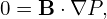
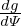
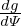

Consider the force balance in the direction of B. Dotting the equilibrium equation (55) by B, we obtain
|
| (56) |
which implies that P is constant along a magnetic field line. Since Ψ is also constant along a magnetic field line, P can be expressed in terms of only Ψ on a single magnetic line. Note that this does not necessarily mean P is a single-valued function of Ψ, (i.e. P = P(Ψ)). This is because P still has the freedom of taking different value on different magnetic field lines with the same value of Ψ while still satisfying B ⋅∇P = 0. This case can physically appear when there are saddle points (X points) in Ψ (refer to Sec. A.9) and P takes different functions of Ψ in the two islands of Ψ sepearated by the X points. For pressure in a single island of Ψ, P = P(Ψ) can be safely assumed.
On the other hand, if P = P(Ψ), then we obtain
| B ⋅∇P = B ⋅∇Ψ = 0, |
i.e., Eq. (56) is satisfied, indicating P = P(Ψ) is a sufficient condition for the force balance in the parallel (to the magnetic field) direction.
Next, consider the ϕ component of Eq. (55), which is written
 | (57) |
Since P = P(Ψ), which implies ∂P∕∂ϕ = 0, equation (57) reduces to
 | (58) |
Using the expressions of the poloidal current density (49) and (50) in the force balance equation (58) yields
 | (59) |
which can be further written
 | (60) |
According to the same reasoning for the pressure, we conclude that g = g(Ψ) is a sufficient condition for the toroidal force balance. (The function g defined here is usually called the “poloidal current function” in tokamak literature. The reason for this name is discussed in Sec. A.3.)
Next, consider the force balance in direction. The  component of the force balance equation (55) is
written
component of the force balance equation (55) is
written
 | (61) |
Using the expressions of the current density and magnetic field [Eqs. (6), (50), and (53)], equation (61) is written
 | (62) |
Assuming the sufficient condition discussed above, i.e., P and g are a function of only Ψ, i.e., P = P(Ψ) and g = g(Ψ), Eq. (62) is written
 | (63) |
which can be simplified to
 | (64) |
i.e.,
 | (65) |
Equation (65) is known as Grad-Shafranov (GS) equation.
[Note that the Z component of the force balance equation is written
|
which turns out to be identical with the Grad-Shafranov equation. This is not a coincidence. The
reason is that the force balance equation has been satisfied in three different directions (namely,  , ,
and B direction) and thus it must be satisfied in all the directions.]
, ,
and B direction) and thus it must be satisfied in all the directions.]


 =
= 


 =
= 


 =
=